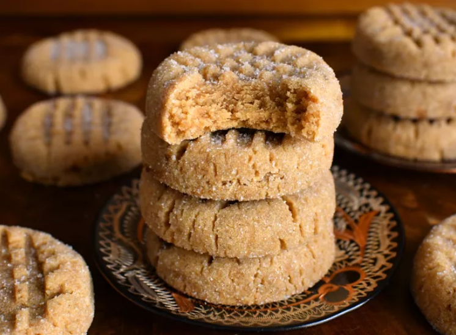

Peanut Butter Recipes

Description
These peanut butter cookies are deliciously soft and chewy in the middle. They taste great and are easy to make!
Ingredients:
- 1 cup unsalted butter
- 1 cup crunchy peanut butter
- 1 cup white sugar
- 1 cup packed brown sugar
- 2 large eggs
- 2 ½ cups all-purpose flour
- 1 ½ teaspoons baking soda
- 1 teaspoon baking powder
- ½ teaspoon salt
Steps:
- Gather all ingredients.
- Beat butter, peanut butter, white sugar, and brown sugar with an electric mixer in a large bowl until smooth; beat in eggs.
- Sift flour, baking soda, baking powder, and salt into a separate bowl; stir into butter mixture until dough is just combined.
Chill cookie dough in the refrigerator for 1 hour to make it easier to work with.
- Preheat the oven to 375 degrees F (190 degrees C). Roll dough into 1-inch balls and place 2 inches apart onto ungreased baking sheets.
Flatten each ball with a fork, making a crisscross pattern.
- Bake in the preheated oven until edges are golden, about 7 to 10 minutes.
- Cool on the baking sheets briefly before removing to a wire rack to cool completely.
Return to Home Page